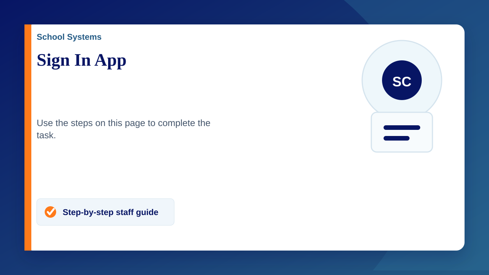

There will be 3 sign in podiums at both the Senior and the Prep site, these are:
Main Office, B Block Staff room and Sixth Form for Senior
Main Office, Early Years Building and Nursery Building for Prep
There are multiple ways to sign in. Search for your name on one of the podiums, tapping your staff ID card on one of the podiums, using the mobile app to manually sign in, having the mobile app automatically sign you in/out when you leave the general area of the site(s) and even sign in from a computer using the website.
The sign in system will also be used for visitors, they will be required to sign in a the Main Office for both sites. When signing in they will have to complete a few fields of data including who they are visiting, the member of staff they are visiting will then get an email notification, alerting them that they have arrived.
How to set up your Staff ID
- Go to one of the podiums
- Tap the screen and use the search function to find yourself
- Tap "Connect an RFID tag"
- Tap your card on the reader on the right hand side
Useful Links
The sign in website - https://companion.signin.app/
Sign in guide - https://signinapp.com/docs/how-to-guides/web-companion-app.html